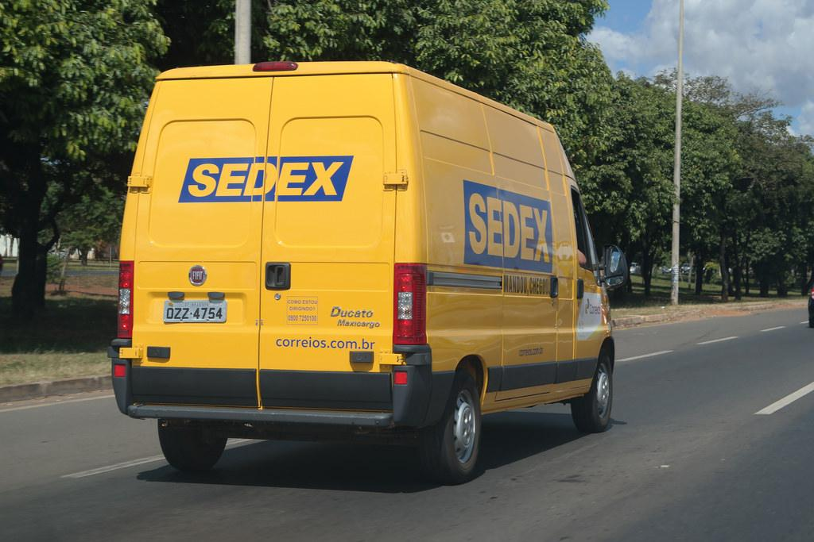
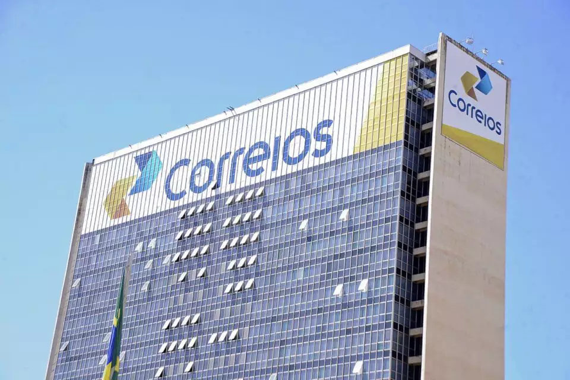
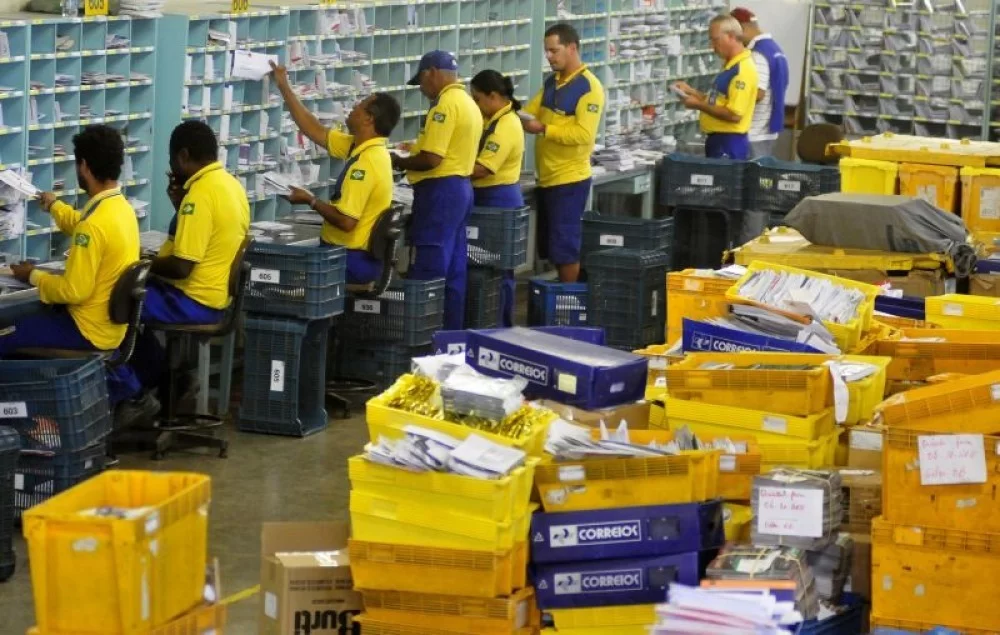
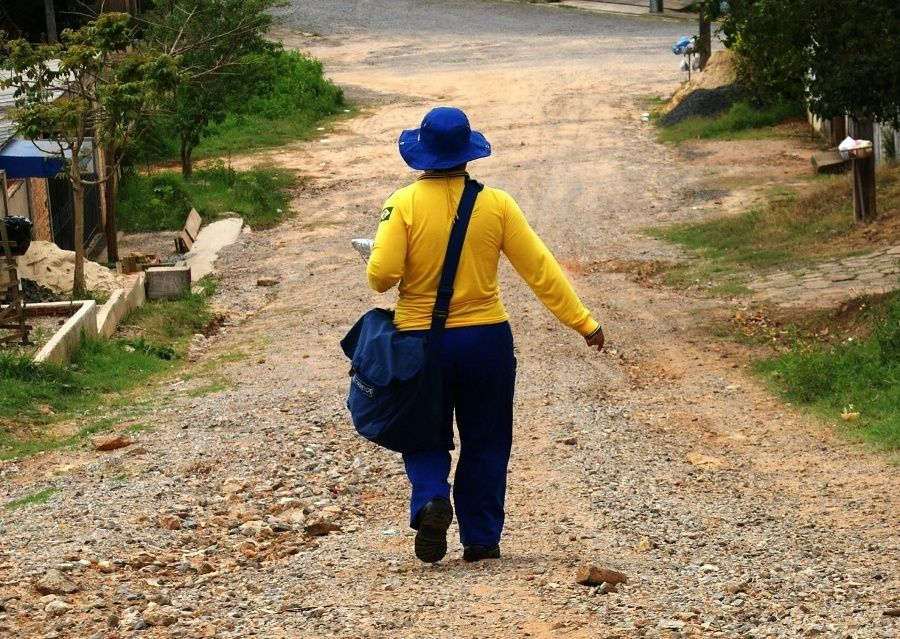
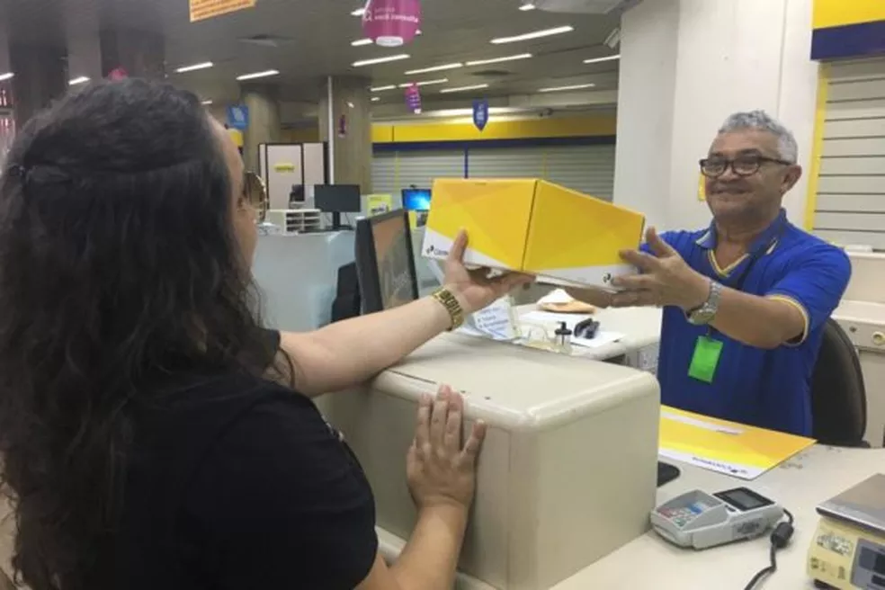

-
Kilometros percorridos
-
Unidades de despacho
-
Encomendas entregues
-
Cobertura total
-
Aprovação entre clientes
Mais de 150 mil kilômetros percorridos por dia, em asfaltos, chão batido e até mesmo rios.
Cerca de uma unidade de despacho a cada 50 kimoletros quadrados.
10 mil entregas efetuadas por dia, incluindo as realizadas durante à noite via Sedex 10.
Entregas acessíveis para todas as localidades do Brasil, de capitais à fazendas.
Satisfação dos clientes de aproximadamente 95% de aprovação.
